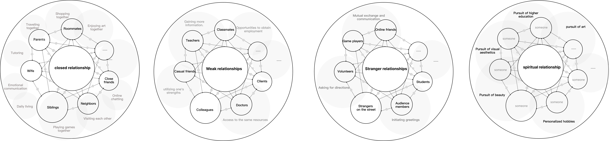

LUO SHAN
luoshan3398@qq.com
Exploring the imbalance
between blind and sighted individuals in different relationship

Building a bridge between visually impaired individuals and sighted people can be broken down into specific
areas.In different relationships, there is a secondary imbalance and unfairness between the visually impaired
and the sighted. In family relationships, this imbalance is due to a lack of interaction and opportunities to
demonstrate one's abilities. How can they play together? How can one tell their loved one that they can also
prepare a perfect meal? How can they play video games with their son and still win? In unfamiliar
relationships, the most critical issue for both parties is the lack of social encounters. Did someone just
smile at me? Did they offer a handshake? What does it mean to make a "V" sign in a group photo? In the pursuit
of individualized spiritual levels, they need to have an identity and interest recognition that transcends the
person themselves. We are all people who love beauty, we are all pursuers of art, and we can all take perfect
photographs...
I am preparing the direction of future research according to this line of thinking and summarizing existing works into a collection.
I am preparing the direction of future research according to this line of thinking and summarizing existing works into a collection.
搭建视障人士和明眼人之间的桥梁是可以被细分的。视障人士和明人在不同的关系中其次存在着不同类型的不平衡、不公平，在家人关系中，这种不平衡是缺少互动和展示自己的能力的机会，如何一起玩耍？如何告诉爱人我也可以做出完美的一餐？如何和儿子一起打电子游戏还能赢？在陌生关系中两方最关键的则是缺少社交相遇时刻，刚刚是有人对我微笑吗？他是不是向我握手了？合照的时候比✌️是什么意思呢？在追求个性化的精神层中，他们需要有脱离人本身的身份人认知，兴趣认知。我们都是爱美的人，我们都是艺术的追求者，我们都可以拍出完美的摄影照片···
我按照这种思路准备未来研究的方向，并将已有的作品归纳在册。
我按照这种思路准备未来研究的方向，并将已有的作品归纳在册。